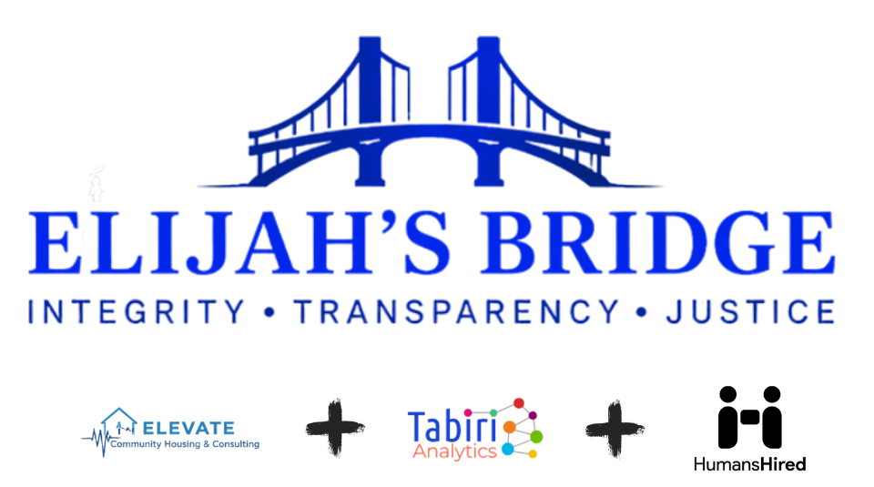

Featured Mission
Elijah's Bridge (Legal Operating System)
In a live deployment, Tabiri AI co-developed Elijah's Bridge, an attorney-supervised legal assistant built to help close the civil justice gap. Facing a tight federal court deadline, the system supported a self-represented litigant in an active civil-rights case and delivered a complete, court-ready draft package on time.
The Operational Load (Machine Time)
500+
Documents
30+
Recordings
200+
Images
100%
Verified
verified
Precision Indexing: 500+ documents organized so every claim traces back to its exact source file.
verified
Media Ingestion: Transcribed 250k+ characters from 30+ recordings into searchable evidence.
verified
Authority Verification: Retrieved cited laws from approved databases with 100% accuracy.